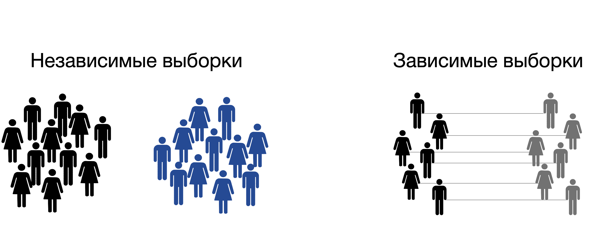

Выборка
Мы рассмотрели два примера – о влиянии кофеина на внимание и коммуникационного рабочего инструмента на продуктивность. В этих примерах мы предположили, что провели исследование – то есть набрали какое-то количество человек и сделали вывод, как в целом это работает не только у этих человек, а вообще у людей. Почему так происходит? Почему мы можем распространить эти выводы на всех людей, которые теоретически могут пить кофе и воспользоваться этим коммуникационным инструментом? И зачем нам вообще это нужно?
Изображение с https://towardsdatascience.com/
Выборочные оценки
Как мы можем сделать вывод о всех людях в целом? Что мы будем делать, если хотим узнать средний рост людей на всей планете? Будем ли мы измерять каждого человека из почти 8 миллиардов на планете и брать среднее арифметическое?
https://ourworldindata.org/human-height
Генеральная совокупность – множество (или совокупность) всех изучаемых объектов в рамках определенного исследовательского вопроса.
Выборка или выборочная совокупность – часть генеральной совокупности, отобранная для изучения определенного исследовательского вопроса.
Когда мы говорим о генеральной совокупности, мы говорим о ее параметрах, например, средний рост людей, обозначим его X. Мы не можем посчитать его напрямую, поэтому нам приходится прибегать к выборочным оценкам, которые часто обозначются той же буквой, что и параметр генеральной совокупности, только “с крышечкой” или “с чертой” X̅ – выборочное среднее, средний рост людей на конкретной выборке.
Итак, когда мы хотим сделать вывод о всех людях из генеральной совокупности – мы проводим исследование на небольшой выборке (в зависимости от метоода исследования необходимый размер выборки может быть от 10 до 1000 чловек) и оцениваем исследуемый параметр генеральной совокупности по выборочным оценкам.
Чтобы не запутаться, о чем речь, ключевые популяционные и выборочные оценки обозначают по-разному:
| Генеральная совокупность | Выборка | |
|---|---|---|
| Среднее (математическое ожидание) | \(\mu\) | M, \(\overline X\) |
| Стандартное отклонение | \(\sigma\) | s, sd |
Репрезентативность выборки
Важным понятием является репрезентативность выборки – способность выборки отражать исследуемый параметр генеральной совокупности.
Одна и та же выборка может быть репрезентативной для одного исследовательского вопроса и не репрезентативной для другого!
Репрезентативность достигается:
- Случайным выбором людей (берем не каких-то конкретных, которые нам больше нравятся, а случайным образом)
- Объемом выборки (доказано, что при большом объеме выборки она достаточно представляет генеральную совокупность, чтобы дать ответ об исследуемом параметре)
Способы формирования репрезентативных выборок
- Простая случайная выборка (simple random sample)
- Систематическая выборка (systematic sample)
- Стратифицированная выборка (stratified sample)
- Кластерная выборка (cluster sample)
Простая случайная выборка набирается из большого количества случайным образом – все элементы генеральной совокупности имеют равные шансы попасть в выборку.
Систематическая выборка имитирует случайный выбор и обычно используется социологами в полевых исследованиях, когда задается определенный шаг в выьборе людей: например, каждый 5-й или 10-й человек.
Стратифицированная выборка нужна, если на исследуемый нами признак может повлиять какой-то параметр, который распределен в генеральной совокупности неравномерно: например, мы исследуем уровень удовлетворенности жизнью, но при этом знаем, что на него влияет уровень дохода – и нам нужно обеспечить эквивалентное распределение уровня дохода в выборке. Далее уже из этих страт по доходу испытуемые выбираются случайно.
Кластерная выборка включает в себя целые отдельные кластеры, без случайного выбора в них: например, мы исследуем школьников, и вместо того, чтобы выбирать их случайно, включим в выборку несколько определенных школ (кластеров)
Зависимые и независимые выборки
Еще одно важное понятие относительно выборок: они могут быть зависимые и независимые.
Независимые выборки используются, когда мы сравнениваем между собой группы наблюдений, относящиеся к разным людям (школам / институтам / и тд). Например, в нашем примере с влияением кофеина на внимание мы можем набрать группу людей, которые будут пить по 3 кружки кофе в день, и другую группу – кто будет пить декофеинизированный напиток. Это разные люди, никак не связанные между собой.
Но если мы бы взяли одно и ту же группу людей, и на одной неделе измеряли их внимание после 3 кружек кофе, а потом на этих же самых людях проверяли, как действует декофеинизированный напиток – это будут уже зависимые выборки, так как это все еще те же самые люди.

Кейс
Исследователь Никита изучал взаимосвязь возраста, преподавательского стажа и профессионального выгорания преподавателей в университетах. Для этого он выбрал несколько университетов: МГУ, Высшая школа экономики и РАНХиГС. Никита нашел по 10 преподавателей департаметов психологии из каждого вуза в социальной сети ВКонтакте и предлагал им заполнить опросник выгорания Маслач (Maslach Burnout Inventory, MBI). На основании обработанных данных Никита сделал следующие выводы: 1) в России чаще выгорают преподаватели более молодого возраста; 2) чаще выгорают преподаватели с меньшим преподавательским стажем; 3) преподаватели МГУ в целом выгорают меньше, чем преподаватели в ВШЭ. Какие методы набора выборки использовал Никита? Верны ли выводы?